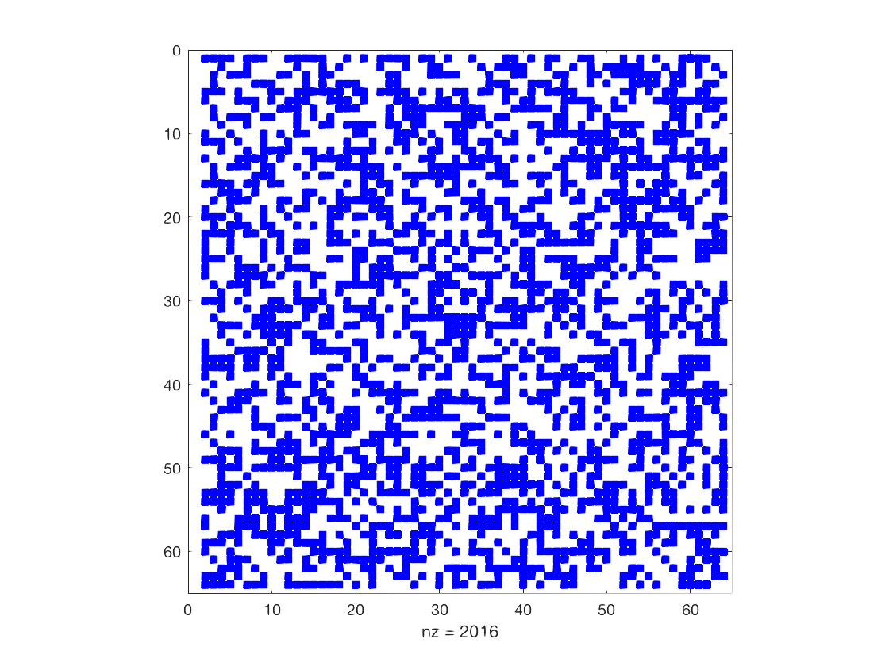

Fast Johnson-Lindenstrauss Transform
Last class, we discussed how to speed up regression using randomization. Consider the feature matrix \(\mathbf{A} \in \mathbb{R}^{n \times d}\) and target vector \(\mathbf{b} \in \mathbb{R}^n\). We wanted to find the least squares solution \[\mathbf{x}^* = \arg\min_{\mathbf{x} \in \mathbb{R}^d} \|\mathbf{Ax} - \mathbf{b}\|_2^2.\] But solving the problem directly is expensive: It would take \(O(nd^2)\) time to compute the solution \(\mathbf{x}^*=(\mathbf{A}^\top \mathbf{A})^{-1} \mathbf{A}^\top \mathbf{b}\) or \(O(nd)\cdot(\# \text{iterations})\) time to compute the solution iteratively.
Instead, we used a random JL matrix \(\mathbf{\Pi} \in \mathbb{R}^{m \times n}\) to reduce the dimension of the problem and find \[ \tilde{\mathbf{x}} = \arg\min_{\mathbf{x} \in \mathbb{R}^m} \|\mathbf{\Pi Ax} - \mathbf{\Pi b}\|_2^2. \] It would take \(O(md^2)\) time to compute the solution \(\tilde{\mathbf{x}}=(\mathbf{\Pi A}^\top \mathbf{\Pi A})^{-1} \mathbf{\Pi A}^\top \mathbf{\Pi b}\) or \(O(md)\cdot(\# \text{iterations})\) time to compute the solution iteratively.
But even computing \(\mathbf{\Pi A}\) is expensive. Since \(\mathbf{\Pi}\) is \(m \times n\) and \(\mathbf{A}\) is \(n \times d\), it would take \(O(mnd)=O(nd^2)\) time to compute the matrix product \(\mathbf{\Pi A}\).
Our goal today is to develop faster Johnson-Lindenstrauss projections.
Typically, we use sparse or structured matrices instead of fully random JL matrices because they are faster to compute.
We will develop a method that reduces a vector \(\mathbf{x} \in \mathbb{R}^n\) down to \(m \approx \frac{\log(1/\delta)}{\epsilon^2}\) dimensions in roughly \(O(n \log n)\) time and guarantee that \[ (1-\epsilon) \|\mathbf{x}\|_2^2 \leq \|\mathbf{\Pi x}\|_2^2 \leq (1+\epsilon) \|\mathbf{x}\|_2^2. \]
Recall that once this bound is proven, linearity lets us preserve quantities like \(\| \mathbf{y} - \mathbf{x} \|_2\) and \(\| \mathbf{Ax} - \mathbf{b} \|_2\) for all \(\mathbf{x}\).
Let \(\mathbf{S} \in \mathbb{R}^{m \times n}\) be a random sampling matrix. Every row contains a value \(s=\sqrt{n/m}\) in a single location and is zero everywhere else.

If we take \(m\) samples, then \(\tilde{\mathbf{x}} = \mathbf{Sx}\) is a random projection that can be computed in \(O(m)\) time. But, there’s an issue. The approach only works well if \(\mathbf{x}\) is “flat”.
Claim: If \(\mathbf{x}_i ^2 \leq \frac{c}{n} \| \mathbf{x} \|_2^2\) for all \(i\), then \(m = O(c \log(1/\delta) /\epsilon^2)\) samples suffice to preserve the \(\ell_2\)-norm within an \(\epsilon\) multiplicative factor with probability \(1-\delta\).
The claim follows from the standard Hoeffding inequality.
Unfortunately, we can’t guarantee that \(\mathbf{x}\) is flat. However, we can multiply by a mixing matrix \(\mathbf{M}\) which ensures it cannot be too concentrated in one place.
We will show a mixing matrix \(\mathbf{M}\) that satisfies the following properties:
\(\| \mathbf{Mx} \|_2^2 = \|\mathbf{x}\|_2^2\) exactly.
Every entry in \(\mathbf{Mx}\) is bounded. That is, \([\mathbf{Mx}]_i^2 \leq \frac{c}{n} \| \mathbf{x} \|_2^2\) for some factor \(c\).
We can compute \(\mathbf{Mx}\) in \(O(n \log n)\) time.
Then we will multiply by a subsampling matrix \(\mathbf{S}\) to reduce the dimension. The projection is
\[\mathbf{\Pi x} = \mathbf{SM x}.\]
Good mixing matrices should look random. In fact, for \(\mathbf{Mx}\) to preserve the \(\ell_2\)-norm of any \(\mathbf{x}\) with high probability, \(\mathbf{M}\) must be a random matrix.
We can see this starting from the observation that \(\| \mathbf{Mx} \|_2^2 = \|\mathbf{x}\|_2^2\) so \(\mathbf{M}\) must be an orthogonal matrix. Since \(\mathbf{M}\) is orthogonal, it has an inverse \(\mathbf{M}^{-1}\). Then we can solve for an \(\mathbf{x}\) such that \(\mathbf{e}_1 = \mathbf{Mx}\) where \(\mathbf{e}_1\) is the first standard basis vector. In particular, \(\mathbf{x} = \mathbf{M}^{-1} \mathbf{e}_1\). If \(\mathbf{M}\) is known in advance, we can adversarily choose \(\mathbf{x}\) to give concentrated mass to the first coordinate. Our solution is to use a random mixing matrix \(\mathbf{M}\) so that, with high probability, \(\mathbf{Mx}\) is flat even if \(\mathbf{x}\) is not.
We have argued that \(\mathbf{M}\) must be a random orthogonal matrix. But, for our approach to work, we need to be able to compute \(\mathbf{Mx}\) quickly. So we will use a pseudorandom matrix instead.
We will use the mixing matrix \(\mathbf{M} = \mathbf{HD}\) where:
\(\mathbf{D} \in \mathbb{R}^{n \times n}\) is a diagonal matrix with the diagonal entries \(D_{i,i} = \pm 1\) chosen uniformly at random.
\(\mathbf{H} \in \mathbb{R}^{n \times n}\) is a Hadamard matrix.
The Hadamard matrix is an orthogonal matrix closely related to the discrete Fourier matrix. It has three critical properties:
\(\| \mathbf{Hx} \|_2^2 = \|\mathbf{x}\|_2^2\) exactly. Thus \(\| \mathbf{HDx} \|_2^2 = \|\mathbf{Dx}\|_2^2 = \|\mathbf{x}\|_2^2\).
\(\mathbf{Hx}\) can be computed in \(O(n \log n)\) time.
All of the entries in \(\mathbf{H}\) have the same magnitude.
We will assume that \(n\) is a power of 2. For \(k=0,1,\ldots\), the \(k\)th Hadamard matrix \(\mathbf{H}_k\) is defined recursively as
\[\begin{align*} \mathbf{H}_0 &= \begin{bmatrix} 1 \end{bmatrix} \\ \mathbf{H}_1 &= \frac{1}{\sqrt{2}} \begin{bmatrix} 1 & 1 \\ 1 & -1 \end{bmatrix} \\ \mathbf{H}_2 &= \frac{1}{\sqrt{2}} \begin{bmatrix} \mathbf{H}_1 & \mathbf{H}_1 \\ \mathbf{H}_1 & -\mathbf{H}_1 \end{bmatrix} \\ \mathbf{H}_k &= \frac{1}{\sqrt{2}} \begin{bmatrix} \mathbf{H}_{k-1} & \mathbf{H}_{k-1} \\ \mathbf{H}_{k-1} & -\mathbf{H}_{k-1} \end{bmatrix}. \end{align*}\]
The \(n\) by \(n\) Hadamard matrix has all entries equal to \(\pm 1/\sqrt{n}\).
Property 1: For any \(k = 0,1,\ldots\), we have \(\| \mathbf{H}_k \mathbf{x} \|_2^2 = \|\mathbf{x}\|_2^2\) for all \(\mathbf{x} \in \mathbb{R}^n\). That is, \(\mathbf{H}_k\) is orthogonal.
We will show the property via induction. Assume the property holds for \(\mathbf{H}_{k-1}\) so \(\mathbf{H}_{k-1}^\top \mathbf{H}_{k-1} = \mathbf{I}_{2^{k-1}}\). Then \[\begin{align*} \mathbf{H}_k^\top \mathbf{H}_k &= \frac{1}{\sqrt{2}} \begin{bmatrix} \mathbf{H}_{k-1}^\top & \mathbf{H}_{k-1}^\top \\ \mathbf{H}_{k-1}^\top & -\mathbf{H}_{k-1}^\top \end{bmatrix} \frac{1}{\sqrt{2}} \begin{bmatrix} \mathbf{H}_{k-1} & \mathbf{H}_{k-1} \\ \mathbf{H}_{k-1} & -\mathbf{H}_{k-1} \end{bmatrix} \\ &= \frac{1}{2} \begin{bmatrix} \mathbf{H}_{k-1}^\top \mathbf{H}_{k-1} + \mathbf{H}_{k-1}^\top \mathbf{H}_{k-1} & \mathbf{H}_{k-1}^\top \mathbf{H}_{k-1} - \mathbf{H}_{k-1}^\top \mathbf{H}_{k-1} \\ \mathbf{H}_{k-1}^\top \mathbf{H}_{k-1} - \mathbf{H}_{k-1}^\top \mathbf{H}_{k-1} & \mathbf{H}_{k-1}^\top \mathbf{H}_{k-1} + \mathbf{H}_{k-1}^\top \mathbf{H}_{k-1} \end{bmatrix} \\ &= \frac{1}{2} \begin{bmatrix} 2\mathbf{I}_{2^{k-1}} & 0 \\ 0 & 2\mathbf{I}_{2^{k-1}} \end{bmatrix} = \mathbf{I}_{2^{k}}. \end{align*}\]
Property 2: We can compute \(\mathbf{\Pi x} = \mathbf{S HDx}\) in \(O(n \log n)\) time.
Notice that \[\begin{align*} \mathbf{H}_kx &= \frac{1}{\sqrt{2}} \begin{bmatrix} \mathbf{H}_{k-1} & \mathbf{H}_{k-1} \\ \mathbf{H}_{k-1} & -\mathbf{H}_{k-1} \end{bmatrix} \begin{bmatrix} \mathbf{x}_a \\ \mathbf{x}_b \end{bmatrix} \\ &= \frac{1}{\sqrt{2}} \begin{bmatrix} \mathbf{H}_{k-1} \mathbf{x}_a + \mathbf{H}_{k-1} \mathbf{x}_b \\ \mathbf{H}_{k-1} \mathbf{x}_a - \mathbf{H}_{k-1} \mathbf{x}_b \end{bmatrix} \end{align*}\] where \(\mathbf{x}_a\) and \(\mathbf{x}_b\) are the first and second halves of \(\mathbf{x}\). Since we only need to compute \(\mathbf{H}_{k-1} \mathbf{x}_a\) and \(\mathbf{H}_{k-1} \mathbf{x}_b\) each once,\(\mathbf{H}_k \mathbf{x}\) is \(T(n) = 2T(n/2) + O(n) = O(n \log n)\).
Property 3: The randomized Hadamard matrix \(\mathbf{HD}\) is a good mixing matrix for smoothing out vectors.

The figure on the left is a Hadamard matrix \(\mathbf{H}\) where blue squares are \(\frac1{\sqrt{n}}\) and white squares are \(-\frac1{\sqrt{n}}\). The figure on the right is a randomized Hadamard matrix \(\mathbf{HD}\).
Pseudorandom objects like this appear all the time in computer science. For example, error correcting codes, efficient hash functions, and more.
We will prove the following.
SHRT Mixing Lemma: Let \(\mathbf{H}\) be an \(n \times n\) Hadamard matrix and \(\mathbf{D}\) be an \(n \times n\) diagonal matrix with \(D_{i,i} = \pm 1\) chosen uniformly at random. For any \(\mathbf{x} \in \mathbb{R}^n\), let \(\mathbf{z} = \mathbf{HDx}\). Then, with probability at least \(1-\delta\), we have \[ z_i^2 \leq \frac{c \log(n/\delta)}{n} \| \mathbf{z} \|_2^2 \] for all \(i\) where \(c\) is a universal constant.
Proof: Let \(\mathbf{h}_i^\top\) be the \(i\)th row of \(\mathbf{H}\). Then \(z_i = \mathbf{h}_i^\top \mathbf{Dx}\) and \[\begin{align*} \mathbf{h}_i^\top \mathbf{D} = \frac{1}{\sqrt{n}} \begin{bmatrix} 1 & 1 & \cdots & - 1 & -1 \end{bmatrix} \begin{bmatrix} D_{1,1} \\ & D_{2,2} \\ & & \ddots \\ & & & D_{n,n} \end{bmatrix} \end{align*}\] where \(D_{1,1}, \ldots, D_{n,n}\) are independent random variables with \(D_{,j} = \pm 1\) chosen uniformly at random. Equivalently, \[\begin{align*} \mathbf{h}_i^\top \mathbf{D} = \frac{1}{\sqrt{n}} \begin{bmatrix} R_1 & R_2 & \ldots & R_n \end{bmatrix} \end{align*}\] where \(R_1, \ldots, R_n\) are independent random variables with \(R_j = \pm 1\) chosen uniformly at random. Then \(z_i = \frac{1}{\sqrt{n}} \sum_{j=1}^n R_j x_j\). Notice that \(z_i\) is a random variable with mean 0 and variance \(\frac{1}{n} \| \mathbf{x} \|_2^2\).
To see this, we can write \[\begin{align*} \mathbb{E} \left[ z_i \right] = \frac{1}{\sqrt{n}} \sum_{j=1}^n x_j \mathbb{E} \left[ R_j \right] = 0 \end{align*}\] and, by linearity of variance, \[\begin{align*} \textrm{Var} \left[ z_i \right] = \frac{1}{n} \sum_{j=1}^n x_j^2 \textrm{Var} \left[ R_j \right] = \frac{1}{n} \sum_{i=1}^n x_i^2 = \frac{1}{n} \| \mathbf{x} \|_2^2. \end{align*}\]
We will apply a Bernstein type concentration inequality to prove the bound.
Rademacher Concentration: Let \(R_1, \ldots, R_n\) be independent random variables with \(R_j = \pm 1\) chosen uniformly at random. Then, for any \(t > 0\) and vector \(\mathbf{a} \in \mathbb{R}^n\), we have \[ \Pr \left( \sum_{i=1}^n R_i a_i \geq t \| \mathbf{a} \|_2 \right) \leq e^{-t^2/2}. \]
This inequality is called the Khintchine inequality. It is specialized to sums of scaled \(\pm 1\)’s and is a bit tighter and easier to apply than the generic Bernstein bound.
Applying the inequality, we have, with probability \(1-\delta\), \[\begin{align*} z_i \leq \sqrt{ \frac{c \log(n/\delta)}{n} \|} \mathbf{x} \|_2 = \sqrt{ \frac{c \log(n/\delta)}{n} \|} \mathbf{z} \|_2 \end{align*}\] where the second equality follows because multiplying by \(\mathbf{H}\) and \(\mathbf{D}\) preserve the \(\ell_2\)-norm. As shown earlier, we can thus guarantee that \[ (1-\epsilon) \| \mathbf{z} \|_2^2 \leq \| \mathbf{Sz} \|_2^2 \leq (1+\epsilon) \| \mathbf{z} \|_2^2 \] as long as \(\mathbf{S} \in \mathbb{R}^{m \times n}\) is a subsampled randomized Hadamard transform with \(m = O\left(\frac{\log(n/\delta) \log(1/\delta)}{\epsilon^2}\right)\).
We have \(\| \mathbf{Sz} \|_2^2 = \| \mathbf{SHDx} \|_2^2 = \| \mathbf{\Pi x} \|_2^2\) and \(\| \mathbf{z} \|_2^2 = \| \mathbf{x} \|_2^2\) so we are done.
In words, the SHRT mixing lemma shows that the mixed vector is very close to uniform with high probability. As we saw earlier, we can therefore argue that \(\| \mathbf{S z} \|_2^2 \approx \| \mathbf{z} \|_2^2.\)
The main result then follows directly from our sampling result.
Fast JL Lemma: Let \(\mathbf{\Pi} = \mathbf{SHD} \in \mathbb{R}^{m \times n}\) be a subsampled randomized Hadamard transform with \(m = O\left(\frac{\log(n/\delta) \log(1/\delta)}{\epsilon^2}\right)\). Then, for any fixed \(\mathbf{x}\), we have \[ (1-\epsilon) \| \mathbf{x} \|_2^2 \leq \| \mathbf{\Pi x} \|_2^2 \leq (1+\epsilon) \| \mathbf{x} \|_2^2 \] with probability \(1-\delta\).
We can apply the theorem to regression. We compute \(\mathbf{\Pi A}\) in \(O(nd \log n)\) time instead of \(O(nd^2)\) time. This is because there are \(d\) columns and each column can be computed in \(O(n \log n)\) time. The result is quite impressive because there are only \(O(nd)\) entries in \(\mathbf{A}\) so the projection is nearly linear.
However, we may want to go faster when \(\mathbf{A}\) is sparse. For this setting, Clarkson and Woodruff in 2013 showed that we can compute \(\mathbf{\Pi A}\) with an ultra-sparse matrix in \(O(\text{nnz}(\mathbf{A}))\) time where \(\text{nnz}(\mathbf{A})\) is the number of non-zero entries in \(\mathbf{A}\). The proofs use totally different techniques than the Johnson-Lindenstrauss and \(\epsilon\)-net arguments we used.
We covered this algorithm because it is simple and easy to implement. The algorithm has also been used for accelerating vector dimensionality reduction, linear algebra, locality sensitive hasing, and randomized kernel learning methods.